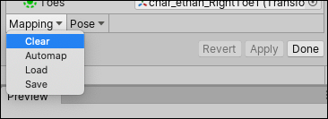
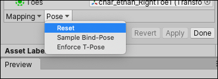

导入人形动画
当 Unity 导入包含__人形__骨架和动画的模型文件时，需要将模型的骨骼结构与其动画进行协调。为了实现这一点，系统会将文件中的每个骨骼映射到人形 Avatar，这样才能正确播放动画。因此，在将模型文件导入 Unity 之前，仔细准备该文件非常重要。
1.定义骨架类型并创建 Avatar。 2.纠正或验证 Avatar 的映射。 3.完成骨骼映射后，可选择单击 Muscles & Settings 选项卡来调整 Avatar 的肌肉配置。 4.可以选择将骨架骨骼到 Avatar 的映射保存为人体模板 (.ht) 文件。 5.可以选择通过定义 Avatar 遮罩来限制在某些骨骼上导入的动画。 6.从 Animation 选项卡中，启用 Import Animation 选项，然后设置其他特定于资源的属性。 7.如果文件包含多个动画或动作，可将特定动作范围定义为动画剪辑。 8.对于文件中定义的每个动画剪辑，可以： * 更改姿势和根变换 * 优化循环 * 对人形骨架两侧的动画进行__镜像 (Mirror)。 * 向剪辑添加曲线以便动画化其他项的时序 * 向剪辑添加事件以便在动画期间触发某些动作 * 丢弃动画的一部分（类似于使用运行时 Avatar 遮罩，但却是在导入时执行的） * 选择其他根运动节点来驱动动作 * 阅读 Unity 提供的有关导入剪辑的任何消息 * 观看动画剪辑的预览 9.要保存更改，请单击 Import Settings__ 窗口底部的 Apply 按钮，也可单击 Revert 放弃所做的更改。
设置 Avatar
从 Inspector 窗口的 Rig 选项卡中，将 Animation Type 设置为 Humanoid。默认情况下，__Avatar Definition__ 属性设置为 Create From This Model。如果保持该选项，Unity 会尝试将文件中定义的一组骨骼映射到人形 Avatar。

In some cases, you can change this option to Copy From Other Avatar to use an Avatar you already defined for another Model file. For example, if you create a Mesh (skin) in your 3D modeling application with several distinct animations, you can export the Mesh to one FBX file, and each animation to its own FBX file. When you import these files into Unity, you only need to create a single Avatar for the first file you import (usually the Mesh). As long as all the files use the same bone structure, you can re-use that Avatar for the rest of the files (for example, all the animations).
如果启用此选项，必须通过设置 Source 属性来指定要使用的 Avatar。
You can also change the maximum number of bones that can influence a given vertex with the Skin Weights property. By default, this property limits influence to four bones, but you can specify more or fewer.
When you click the Apply button, Unity tries to match up the existing bone structure to the Avatar bone structure. In many cases, it can do this automatically by analyzing the connections between bones in the rig.
If the match succeeds, a check mark appears next to the Configure menu. Unity also adds an Avatar sub-Asset to the Model Asset, which you can find in the Project view.
成功匹配只是意味着 Unity 能够匹配所有必需的骨骼。但是，为了获得更好的结果，还需要匹配可选骨骼，并将模型设置为正确的 T 形姿势 (T-pose)。
如果 Unity 无法创建 Avatar，__Configure__ 按钮旁将显示一个叉号，且项目视图中不显示任何 Avatar 子资源。
由于 Avatar 是动画系统极其重要的一个方面，因此为__模型__正确配置 Avatar 非常重要。
出于这一原因，无论自动创建 Avatar 是否成功，都务必要检查 Avatar 是否有效并正确进行设置。
配置 Avatar
如果 Unity 无法为模型创建 Avatar，必须单击 Rig 选项卡上的 Configure … 按钮以打开 Avatar 窗口并修复 Avatar。
如果匹配成功，可以单击 Rig 选项卡上的 Configure … 按钮，或从项目视图中打开窗口：
1.单击__项目__视图中的 Avatar 子资源。Inspector 将显示 Avatar 名称和 Configure Avatar 按钮。 2.单击 Configure Avatar 按钮。
If you haven’t already saved the Avatar, a message appears asking you to save your Scene:
出现这种情况的原因是，在 Configure 模式下，Scene 视图用于单独显示所选模型的骨骼、肌肉和动画信息，而不显示场景的其余部分。
保存场景后，__Inspector__ 内将显示 Avatar 窗口，其中显示所有骨骼映射。
确保骨骼映射正确，并映射了 Unity 未分配的任何可选骨骼。
骨架必须至少具备所需的骨骼才能让 Unity 产生有效的匹配。为了提高与 Avatar 相匹配的机会，请确保骨骼的命名方式反映了其所代表的身体部位。例如，“LeftArm”和“RightForearm”明确显示了这些骨骼的控制对象。
映射策略
如果模型未产生有效匹配，可以使用与 Unity 内部过程类似的过程：
1.从 Avatar 窗口底部的 Mapping 菜单中选择 Clear 来重置 Unity 尝试进行的映射。

2. Choose Sample Bind-pose from the Pose menu at the bottom of the Avatar window to approximate the Model’s initial modeling pose.

3.选择 Mapping > Automap 从初始姿势创建骨骼映射。
4.选择 Pose > Enforce T-Pose 将模型设置回所需的 T 形姿势。
如果自动映射彻底失败或部分失败，可以通过从 Scene 视图或 Hierarchy 视图中拖动骨骼来手动分配骨骼。如果 Unity 认为骨骼适合，该骨骼会在 Avatar Mapping 选项卡中显示为绿色；否则显示为红色。
重置姿势
The T-pose is the default pose required by Unity animation and is the recommended pose to model in your 3D modeling application. However, if you did not use the T-pose to model your character and the animation does not work as expected, you can select Reset from the Pose drop-down menu:
If the bone assignment is correct, but the character is not in the correct pose, you will see the message “Character not in T-Pose”. You can try to fix that by choosing Enforce T-Pose from the Pose menu. If the pose is still not correct, you can manually rotate the remaining bones into a T-pose.
创建 Avatar 遮罩
通过遮罩功能可以丢弃剪辑中的一些动画数据，从而让剪辑仅动画化对象或角色的某些部分而不是整体。例如，可能有一个标准的行走动画，其中包括手臂和腿部运动，但如果一个角色用双手抱着大型物体，那么不会希望其手臂在行走时向侧面摆动。但是，仍然可以在角色抱着物体时使用标准行走动画，但需要使用遮罩在行走动画的上层仅播放抱着物体动画的上半身部分。
可以在导入时或运行时将遮罩应用于动画剪辑。最好是在导入时应用遮罩，因为这样做允许从构建中忽略丢弃的动画数据，从而使文件更小，进而使用更少的内存。此外还可以提高处理速度，因为在运行时需要混合的动画数据更少。在某些情况下，导入遮罩可能对您不适用。这种情况下，可在运行时应用遮罩，为此需要创建 Avatar 遮罩 (Avatar Mask) 资源，并在 Animator Controller 的层设置中使用该资源。
要创建空的 Avatar 遮罩资源，可以：
- 从 Assets 菜单中选择 Create > Avatar Mask。
- 在__项目__视图中单击要定义遮罩的模型对象，然后单击右键并选择 Create > Avatar Mask。
新资源将显示在__项目__视图中：
现在可以将人体部位添加到遮罩，然后将遮罩添加到动画层或添加对遮罩的引用（在 Animation 选项卡的 Mask 部分）。